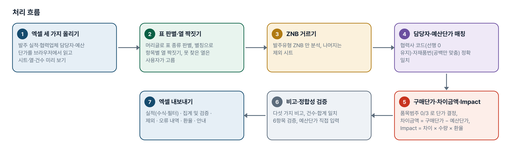
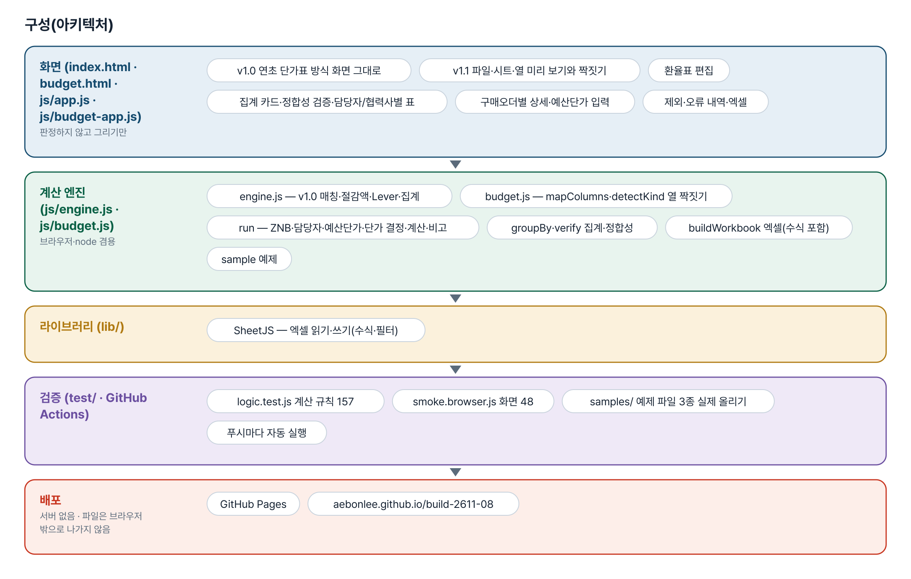
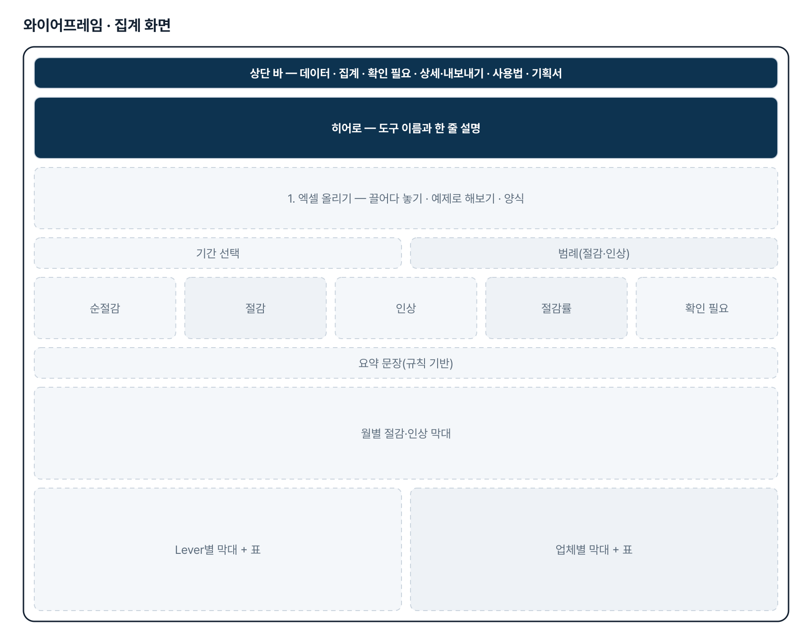
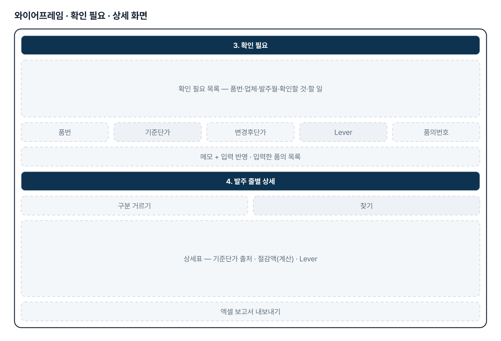
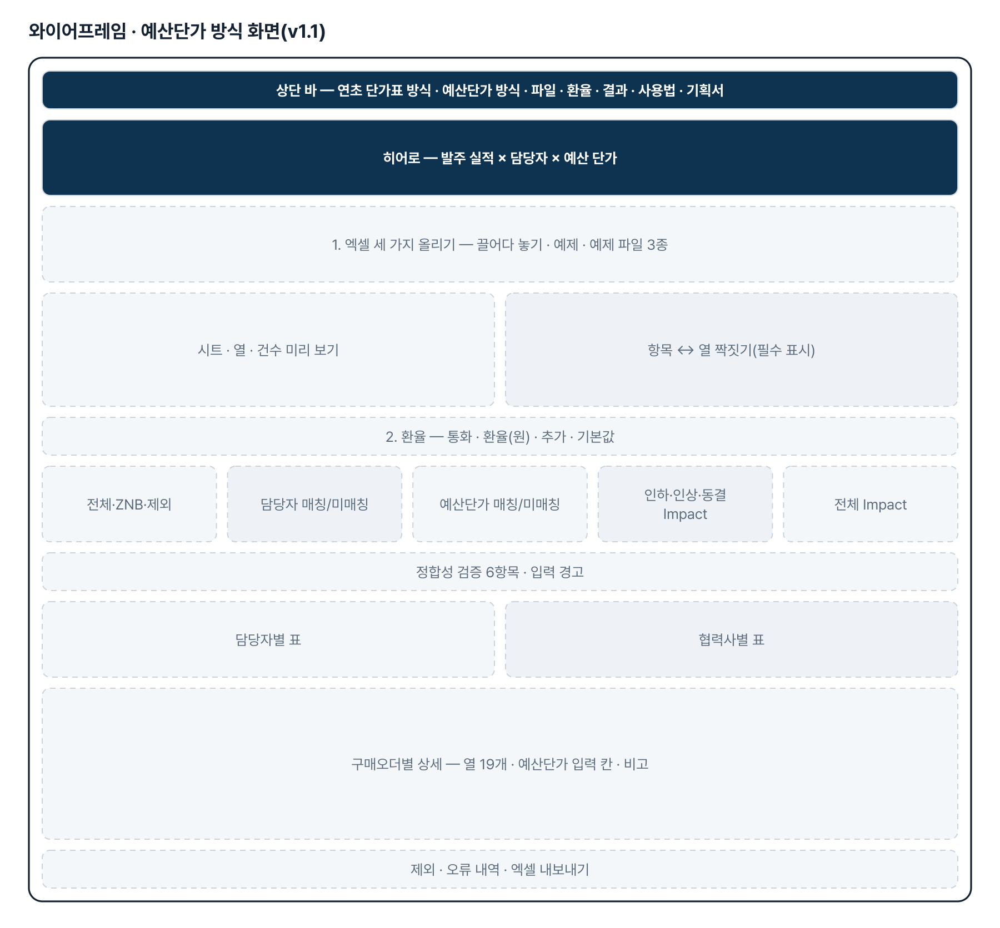
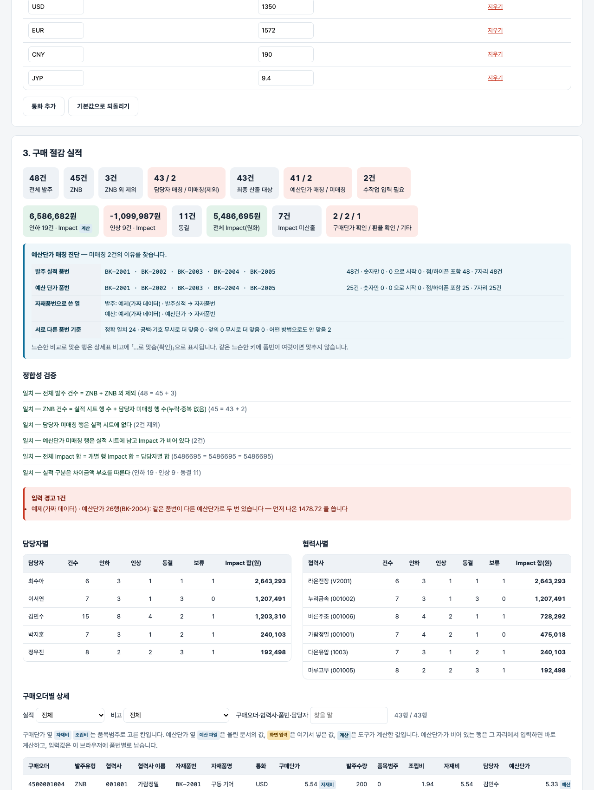

기획서 내려받기
파이프라인 · 아키텍처 · 와이어프레임 · 개발일지가 들어간 워드 문서입니다. 버전마다 따로 남깁니다.
| 버전 | 날짜 | 바뀐 점 | 파일 |
|---|---|---|---|
| v1.3 | 2026-11-13 | 구매단가 결정 기준 정정(기획자 2026-11-12 「프롬프트 오류 정정」) — 품목범주 0 이면 구매단가를 그대로, 3 이면 조립비. 자재비 열은 쓰지 않음 / 처음 프롬프트의 「0 이면 자재비」가 오타여서, 자재비가 0 인 실제 행의 구매단가가 0 으로 나오던 문제가 풀림 / 화면 꼬리표 「자재비」 → 「구매단가」, 엑셀 안내 · 사용법 문구 · 예제 파일 갱신 | 워드 내려받기 |
| v1.2 | 2026-11-04 | 기획자 보고(패들릿 2026-11-04 오전 「품번으로 매칭해서 예산단가를 활용해야 하는데 매칭이 안 됩니다」, 실제 파일 15,773건 중 예산단가 매칭 0) 대응 / 자재품번 매칭을 세 단계로 — 정확 일치 → 공백·점·하이픈·대소문자 무시 → 숫자만(앞의 0 무시, 엑셀이 품번을 숫자로 읽은 경우). 느슨하게 맞춘 행은 비고에 「…로 맞춤(확인)」, 같은 느슨한 키에 품번이 여럿이면 맞추지 않음 / 「예산단가 매칭 진단」 — 양쪽 품번 예시 5개 · 모양(숫자만 · 0 으로 시작 · 점/하이픈 · 자릿수) · 자재품번으로 쓴 열 · 기준별로 맞는 건수 · 원인 힌트 / 테스트 판정 158→178 · 화면 48 / (같은 날 2차) 실제 파일 머리글로 진짜 원인 확인 — 예산 단가 파일에 「발주수량」 열이 있어 표 판별이 「발주 실적」으로 잘못 잡혀 예산 표가 통째로 버려졌다. 판별 규칙을 「구매오더번호 + 발주유형이 있어야 발주 실적, 예산단가 + 자재품번이 있고 둘이 없으면 예산 표」로 고침. 판정 182 | 워드 내려받기 |
| v1.1 | 2026-11-03 | 기획자 상세 기획안(게시물 4129353795) 반영 — 발주 실적 × 협력업체 담당자 × 예산 단가 흐름을 새 화면(budget.html)으로 추가, v1.0 연초 단가표 방식은 그대로 / 열 짝짓기·ZNB 거르기·담당자/예산단가 매칭·품목범주별 구매단가·차이금액/Impact/실적·비고 다섯 가지·정합성 검증 6항목 / 예산단가 화면 입력(브라우저 보관·재처리 유지)·환율표 수정, 엑셀은 열 19개 순서 고정 + 예산단가 입력 시 수식 자동 계산 + 집계·제외·오류 내역·환율 시트 / 예제 파일 3종(samples/) · 계산 테스트 66→157 · 화면 테스트 19→48 | 워드 내려받기 |
| v1.0 | 2026-11-02 | 첫 판 — 품번 매칭·절감액·Lever·확인 필요·집계 그래프·엑셀 보고서 / 기획서 워드 판·파이프라인·아키텍처·와이어프레임 추가 | 워드 내려받기 |
요구사항과 구현
| 기획서 요구 | 구현 |
|---|---|
| 월별 발주 실적 수집·통합 | 엑셀 여러 개·시트 여러 장을 한 번에 올림. 머리글로 표 종류 판별, 열 이름 별칭 |
| 기존 품번 절감 산출 | (연초 확정 단가 − 실 발주 단가) × 발주 수량 |
| 신규 품번 절감 산출 | (품의서 기준 단가 − 실 발주 단가) × 발주 수량. 품의서 정보는 표로 올리거나 화면 입력 |
| 정확성·신뢰성 | 기준 단가 출처 표시(연초 단가표·품의서 표·화면 입력), 품의 변경후단가와 발주단가가 다르면 확인 필요 |
| Lever별 자동 분류 | 원자재 연동·가공비 현실화·VA/VE·BCC·국산화·기타 + 미분류, 표기 흔들림 맞춤 |
| 신규 품번·돌발 변수 병목 | 확인 필요 목록 3종, 기호만 다른 품번의 품의 제안·한 번에 연결 |
| 분석·보고 | Lever·업체·월·품번별 집계, 그래프, 엑셀 보고서 9시트, 요약 문장(AI 다듬기 선택) |
| (v1.1) 입력 3종 · 열 이름이 달라도 매칭 | 발주 실적·협력업체 담당자·예산 단가. 같은 뜻 낱말 표(ALIASES)로 짝짓고 못 찾은 열은 화면에서 고름. 파일마다 시트 구성·열·건수·첫 세 줄 미리 보기 |
| (v1.1) 발주유형 ZNB 만 분석 | ZNB 외는 「제외(비ZNB)」 시트에 보관. 공백·대소문자는 맞춤 |
| (v1.1) 협력업체 담당자 매칭 | 협력사 코드 정확 일치(앞뒤 공백·숫자/글자 형식만 맞춤, 선행 0 유지). 미매칭은 「미매칭」 표시 + 실적에서 제외 + 「오류 내역」 |
| (v1.1) 예산 단가 매칭·수작업 입력 | 자재품번 정확 일치(공백만 맞춤). 미매칭 행은 남기고 예산단가·차이금액·Impact·실적 공란 + 비고. 화면 입력 칸(브라우저에 품번별 보관, 재처리에도 유지), 엑셀은 예산단가를 넣으면 수식이 자동 계산 |
| (v1.1) 구매단가 결정 | (v1.3 정정) 품목범주 0 → 구매단가 열 그대로, 3 → 조립비. 자재비 열은 쓰지 않음. 그 밖·공란·숫자 아님 → 「구매단가 확인 필요」 |
| (v1.1) 차이금액·Impact·실적 | 차이금액 = 구매단가 − 예산단가(양수 인하 · 음수 인상 · 0 동결). Impact = 차이금액 × 발주수량 × 환율, 정수 반올림. 환율 KRW 1 · USD 1,350 · EUR 1,572 · CNY 190 · JYP 9.4(화면에서 수정), JPY 는 확인 대상, 정의 없는 통화 「환율 확인 필요」 |
| (v1.1) Lever·비고·출력 형식 | Lever = NOTE 그대로. 비고는 다섯 가지만, 정상은 공란. 「구매절감 실적」 시트 열 19개 순서 고정 · 구매오더 단위 유지 · 집계 및 검증 · 제외 · 오류 내역 · 환율 시트 |
그림으로 보기






개발일지
2026-11-13 · 마무리 — 로그인 · 게시판 · 첫 화면(판 2026-11-13.1)
- 과정 마무리 묶음을 붙임(마산 2차수 과제와 같은 키트) — 로그인 전 첫 화면(사진 3장 · 기능 · 사용 순서 · 기획서), 회원가입 → 사용 신청 → 관리자 승인, 게시판 · 새 글 알림, 내 정보, 관리(구성원 승인 · 첫 화면 모양)
- Supabase 표 · 함수 · 정책은 전부 build261108_ 로 시작(auth.sql · board.sql · site.sql). 과정용 프로젝트에 적용했고, supabase/README.md 순서대로 본인 프로젝트로 옮길 수 있음
- 도구의 계산 · 판정 · 저장 방식은 그대로(업무 자료는 지금처럼 브라우저 안에서만 처리). 기획서 · 사용법 쪽은 로그인 없이 읽음
- 내 PC(파일로 열기 · localhost)에서는 로그인을 건너뜀 — 주소 끝에 ?auth=1 을 붙이면 로그인 화면을 볼 수 있음
2026-11-13 · v1.3 구매단가 기준 정정
- 보고 원문(패들릿 2026-11-12, 최상원, 화면 캡처): 「품목범주가 0이면 구매단가 그대로 활용, 품목범주가 3이면 조립비를 적용. 자재비는 불필요」 — 캡처에서 구매단가가 「0 자재비 · 원본 171,3…」으로 나옴
- 원인: 처음 프롬프트대로 품목범주 0 에 자재비를 썼는데 실제 파일은 자재비가 0 이고 구매단가 열에 값이 있음
- decidePrice 를 품목범주 0 → 원본 구매단가, 3 → 조립비로 바꿈. 구매단가가 비면 자재비로 채우지 않고 보류
- 판정 테스트 183 · 화면 48 통과. 예제 파일은 tools/make-samples.js 로 다시 만듦
2026-11-04 · v1.2 품번 느슨한 매칭 · 매칭 진단
- 보고 원문(패들릿 게시물 4130332145, 최상원, 화면 캡처): 「품번으로 매칭해서 예산단가를 활용해야하는데 매칭이 안됩니다.」 — 캡처: 전체 발주 60,627 · ZNB 59,541 · 담당자 매칭 15,773/43,768 · 예산단가 매칭 0/15,773 · 수작업 입력 필요 15,773
- 실제 파일은 받지 않았다(사내 데이터). 품번이 한쪽은 숫자(앞의 0 탈락)·한쪽은 글자(점·하이픈 포함)인 흔한 경우를 세 단계 키로 받고, 어느 쪽인지 화면에서 바로 보이게 진단 표를 붙였다
- budget.js: looseKey · digitKey · findBudget(정확→느슨→숫자) · summary.budgetLoose/budgetDigit · diagnose(). budget-app.js: 진단 표 · 매칭 카드에 「(느슨한 매칭 n)」. 판정 테스트 20개 추가, 되돌려 확인: 느슨한 단계를 끄면 4개 실패
- 2차(12:40): 기획자가 경기대 메일로 보낸 실제 파일 3개(담당자 190행 · 예산단가 10,073행 · 발주 실적 60,627행)를 메일 탭 안에서 머리글만 읽어 엔진에 넣어 보니 예산단가.xlsx 가 orders 로 판별되고 필수 열(오더번호·발주유형·협력사·통화·품목범주)이 없어 조용히 버려지고 있었다(화면엔 「예산 단가 표가 없습니다」 경고만). detectKind 수정 + 실제 머리글 3종 테스트. 파일 값은 리포·스크래치 어디에도 저장하지 않았다.
2026-11-03 · v1.1 상세 기획안 방식
- 패들릿 상세 기획안(게시물 4129353795 「좀 더 상세하게 작성했습니다」)을 CLAUDE.md 부록 B 에 옮기고 1~11절을 요구사항 표에 대응
- 엔진 budget.js — 열 짝짓기·표 판별, ZNB 거르기, 담당자·예산단가 매칭(코드 선행 0 유지, 품번 공백만), 구매단가 결정, 차이금액·Impact·실적, 비고, 집계·정합성, 엑셀(수식) 구성, 예제
- 화면 budget.html — 파일·시트·열 미리 보기와 짝짓기, 환율표, 집계 카드, 검증, 담당자/협력사별, 상세(예산단가 입력), 제외·오류, 엑셀
- 계산 테스트 66 → 157 · 화면 테스트 19 → 48 통과, 열두 가지 되돌리기 확인
2026-11-02 · 첫 판
- 패들릿 build02 최상원 기획을 작업 지시서(CLAUDE.md)로 옮기고 구현
- 계산 엔진 engine.js — 표 판별, 정리·검증, 매칭·절감액, Lever 분류, 확인 필요, 집계
- 화면 — 집계 카드·그래프·확인 필요·품의 입력·상세·엑셀
- 계산 테스트 66 · 화면 테스트 19 통과, 배포